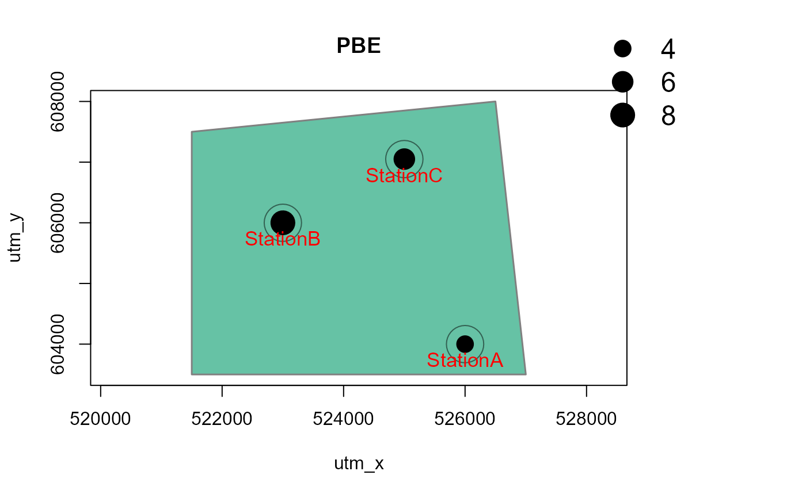
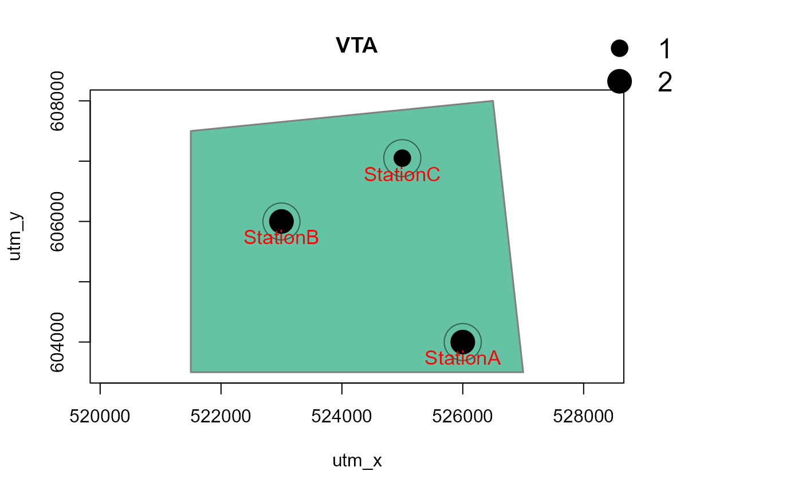
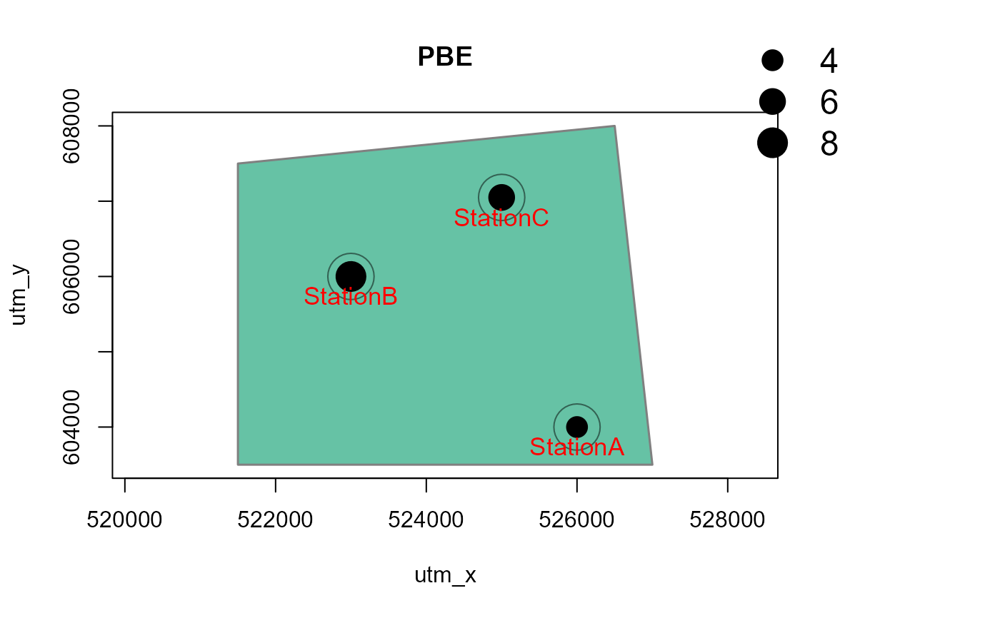
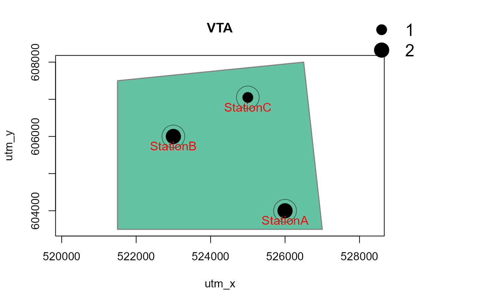

Generate maps of observed species richness and species presences by station
Source:R/detectionMaps.R
detectionMaps.RdGenerates maps of observed species richness and species presence by species and station. Output can be R graphics, PNG graphics or a shapefile for use in GIS software.
detectionMaps(
CTtable,
recordTable,
Xcol,
Ycol,
backgroundPolygon,
stationCol = "Station",
speciesCol = "Species",
speciesToShow,
richnessPlot = TRUE,
speciesPlots = TRUE,
addLegend = TRUE,
printLabels = FALSE,
smallPoints,
plotR = TRUE,
writePNG = FALSE,
plotDirectory,
createPlotDir = FALSE,
pngMaxPix = 1000,
writeShapefile = FALSE,
shapefileName,
shapefileDirectory,
shapefileProjection
)Arguments
- CTtable
data.frame. contains station IDs and coordinates
- recordTable
data.frame. the record table created by
recordTable- Xcol
character. name of the column specifying x coordinates in
CTtable- Ycol
character. name of the column specifying y coordinates in
CTtable- backgroundPolygon
SpatialPolygons or SpatialPolygonsDataFrame. Polygon to be plotted in the background of the map (e.g. project area boundary)
- stationCol
character. name of the column specifying station ID in
CTtableandrecordTable- speciesCol
character. name of the column specifying species in
recordTable- speciesToShow
character. Species to include in the maps. If missing, all species in
recordTablewill be included.- richnessPlot
logical. Generate a species richness plot?
- speciesPlots
logical. Generate plots of all species number of independent events?
- addLegend
logical. Add legends to the plots?
- printLabels
logical. Add station labels to the plots?
- smallPoints
numeric. Number by which to decrease point sizes in plots (optional).
- plotR
logical. Create plots in R graphics device?
- writePNG
logical. Create PNGs of the plots?
- plotDirectory
character. Directory in which to save the PNGs
- createPlotDir
logical. Create
plotDirectory?- pngMaxPix
integer. number of pixels in pngs on the longer side
- writeShapefile
logical. Create a shapefile from the output?
- shapefileName
character. Name of the shapefile to be saved. If empty, a name will be generated automatically.
- shapefileDirectory
character. Directory in which to save the shapefile.
- shapefileProjection
character. A character string of projection arguments to use in the shapefile.
Value
An invisible data.frame with station coordinates, numbers of
events by species at each station and total species number by station. In
addition and optionally, R graphics or png image files.
Details
The column name stationCol must be identical in CTtable and
recordTable and station IDs must match.
Shapefile creation depends on the packages sf.
Argument shapefileProjection must be a valid argument of
st_crs (one of (i) character: a string accepted by GDAL,
(ii) integer, a valid EPSG value (numeric), or (iii) an object of class crs.
If shapefileProjection is undefined,
the resulting shapefile will lack a coordinate reference system.
References
A great resource for coordinate system information
is https://spatialreference.org/. Use the Proj4 string as
shapefileProjection argument.
Examples
# load station information
data(camtraps)
# load record table
data(recordTableSample)
# create maps
Mapstest <- detectionMaps(CTtable = camtraps,
recordTable = recordTableSample,
Xcol = "utm_x",
Ycol = "utm_y",
stationCol = "Station",
speciesCol = "Species",
writePNG = FALSE,
plotR = TRUE,
printLabels = TRUE,
richnessPlot = TRUE,
addLegend = TRUE
)


 # with a polygon in the background, and for one species only
# make a dummy polygon for the background
library(sp)
poly1 <- Polygon(cbind(c(521500,526500,527000, 521500),c(607500, 608000, 603500, 603500)))
poly2 <- Polygons(list(poly1), "s1")
poly3 <- SpatialPolygons(list(poly2))
Mapstest2 <- detectionMaps(CTtable = camtraps,
recordTable = recordTableSample,
Xcol = "utm_x",
Ycol = "utm_y",
backgroundPolygon = poly3, # this was added
speciesToShow = c("PBE", "VTA"), # this was added
stationCol = "Station",
speciesCol = "Species",
writePNG = FALSE,
plotR = TRUE,
printLabels = TRUE,
richnessPlot = TRUE,
addLegend = TRUE
)


# with a polygon in the background, and for one species only
# make a dummy polygon for the background
library(sp)
poly1 <- Polygon(cbind(c(521500,526500,527000, 521500),c(607500, 608000, 603500, 603500)))
poly2 <- Polygons(list(poly1), "s1")
poly3 <- SpatialPolygons(list(poly2))
Mapstest2 <- detectionMaps(CTtable = camtraps,
recordTable = recordTableSample,
Xcol = "utm_x",
Ycol = "utm_y",
backgroundPolygon = poly3, # this was added
speciesToShow = c("PBE", "VTA"), # this was added
stationCol = "Station",
speciesCol = "Species",
writePNG = FALSE,
plotR = TRUE,
printLabels = TRUE,
richnessPlot = TRUE,
addLegend = TRUE
)

